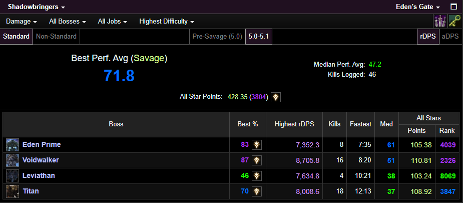
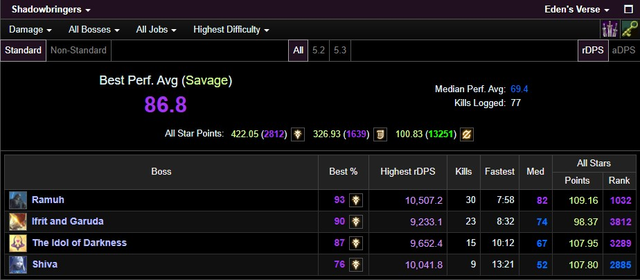
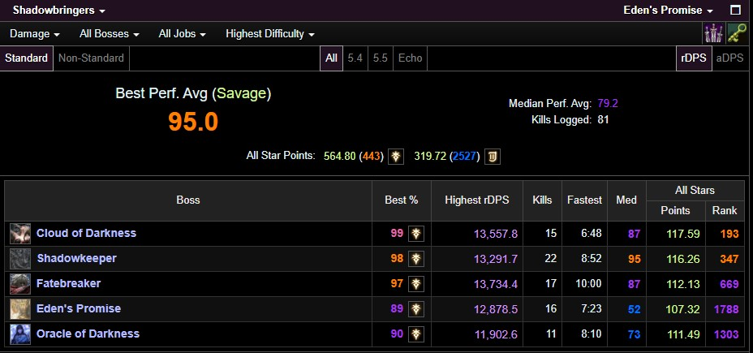
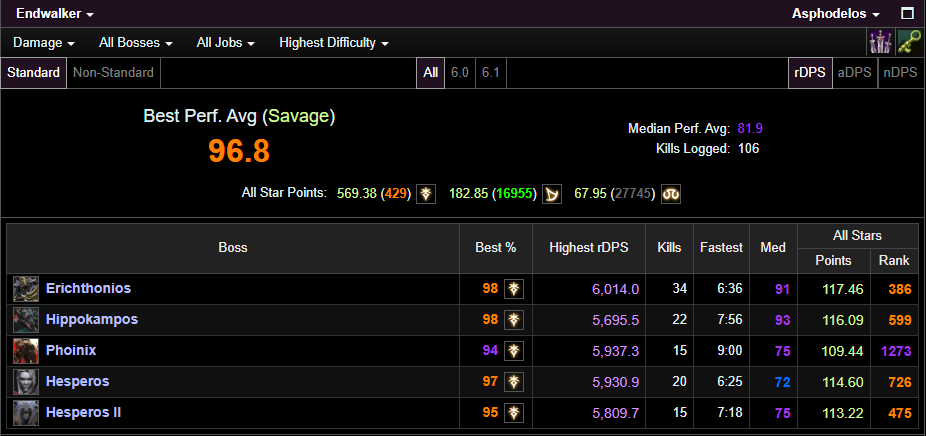

Hello!
A DRK Main since 2017, I'm a triple legend ultimate raider on Gilgamesh who specializes in raiding as a tank. I started my raiding journey with the release of the Shadowbringers expansion. From there I propelled myself into the hardcore raider scene, advancing my abilities and galvanizing my skillset as an omnitank. A few of my accomplishments and a demonstration of my experience include:
Below will be a demonstration of my accelerated improvement and my advanced performance.
Performance
Eden's Gate
Eden's Verse
Eden's Promise
Asphodelos
Contact me!
I would love to hear from you! If you wanted a more in-depth look at my performance, feel free to click here and check out my FFLogs. Feel free to reach out by sending me a tell in-game or by messaging me on discord for any of the following!
- If you have any questions to ask me about my experience as a tank.
- If you have any questions to ask me about my journey as a raider.
- If you have any questions to ask me about my experience as an ultimate raider.
- If you want to provide any feedback or opinions
- If you want to engage in discussion regarding anything related to raiding in FFXIV.